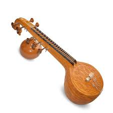

Carnatic music is a system of music commonly associated with southern India. It is one of two main subgenres of Indian classical music that evolved from ancient Hindu traditions, the other subgenre being Hindustani music, which emerged as a distinct form because of Persian or Islamic influences from Northern India. The main emphasis in Carnatic music is on vocal music; most compositions are written to be sung, and even when played on instruments, they are meant to be performed in gāyaki (singing) style.
Carnatic music is usually performed by a small ensemble of musicians, consisting of a principal performer (usually a vocalist), a melodic accompaniment (usually a violin), a rhythm accompaniment (usually a mridangam), and a tambura, which acts as a drone throughout the performance. Other typical instruments used in performances may include the ghatam, kanjira, morsing, venu flute, veena, and chitraveena. The greatest concentration of Carnatic musicians is to be found in the city of Chennai.Various Carnatic music festivals are held throughout India and abroad, including the Madras Music Season, which has been considered to be one of the world's largest cultural events.
Śruti commonly refers to musical pitch. It is the approximate equivalent of a tonic (or less precisely a key) in Western music; it is the note from which all the others are derived. It is also used in the sense of graded pitches in an octave. While there are an infinite number of sounds falling within a scale (or raga) in Carnatic music, the number that can be distinguished by auditory perception is twenty-two (although over the years, several of them have converged). In this sense, while sruti is determined by auditory perception, it is also an expression in the listener's mind.
A classic "tambura" playing Sa-Pa
Swara refers to a type of musical sound that is a single note, which defines a relative (higher or lower) position of a note, rather than a defined frequency. Swaras also refer to the solfege of Carnatic music, which consist of seven notes, "sa-ri-ga-ma-pa-da-ni" (compare with the Hindustani sargam: sa-re-ga-ma-pa-dha-ni or Western do-re-mi-fa-so-la-ti). These names are abbreviations of the longer names shadja, rishabha, gandhara, madhyama, panchama, dhaivata and nishada. Unlike other music systems, every member of the solfege (called a swara) has three variants. The exceptions are the drone notes, shadja and panchama (also known as the tonic and the dominant), which have only one form; and madhyama (the subdominant), which has two forms.
A raga in Carnatic music prescribes a set of rules for building a melody – very similar to the Western concept of mode. It specifies rules for movements up (aarohanam) and down (avarohanam), the scale of which notes should figure more and which notes should be used more sparingly, which notes may be sung with gamaka (ornamentation), which phrases should be used or avoided, and so on. In effect, it is a series of obligatory musical events which must be observed, either absolutely or with a particular frequency.In Carnatic music, the sampoorna ragas (those with all seven notes in their scales) are classified into a system called the melakarta, which groups them according to the kinds of notes that they have. There are seventy-two melakarta ragas, thirty six of whose madhyama (subdominant) is shuddha (perfect fourth from the tonic), the remaining thirty-six of whose madhyama (subdominant) is prati (an augmented fourth from the tonic). The ragas are grouped into sets of six, called chakras ("wheels", though actually segments in the conventional representation) grouped according to the supertonic and mediant scale degrees. There is a system known as the katapayadi sankhya to determine the names of melakarta ragas. Ragas may be divided into two classes: janaka ragas (i.e. melakarta or parent ragas) and janya ragas (descendant ragas of a particular janaka raga). Janya ragas are themselves subclassified into various categories.
Tala refers to a fixed time cycle or metre, set for a particular composition, which is built from groupings of beats.[citation needed] Talas have cycles of a defined number of beats and rarely change within a song. They have specific components, which in combinations can give rise to the variety to exist (over 108), allowing different compositions to have different rhythms.Carnatic music singers usually keep the beat by moving their hands up and down in specified patterns, and using their fingers simultaneously to keep time. Tala is formed with three basic parts (called angas) which are laghu, dhrtam, and anudhrtam, though complex talas may have other parts like plutam, guru, and kaakapaadam. There are seven basic tala groups which can be formed from the laghu, dhrtam, and anudhrtam:
- Ata tala
- Dhruva tala
- Eka tala
- Jhampa tala
- Matya tala
- Rupaka tala
- Triputa tala
Improvisation in raga is the soul of Indian classical music – an essential aspect."Manodharma Sangeetam" or "kalpana Sangeetam" ("music of imagination") as it is known in Carnatic music, embraces several varieties of improvisation. The main traditional forms of improvisation in Carnatic music consist of the following:
An alapana, sometimes also called ragam,is the exposition of a raga or tone – a slow improvisation with no rhythm, where the raga acts as the basis of embellishment. In performing alapana, performers consider each raga as an object that has beginnings and endings and consists somehow of sequences of thought. The performer will explore the ragam and touch on its various nuances, singing in the lower octaves first, then gradually moving up to higher octaves, while giving a hint of the song to be performed. Theoretically, this ought to be the easiest type of improvisation, since the rules are so few, but in fact, it takes much skill to sing a pleasing, comprehensive (in the sense of giving a "feel for the ragam") and, most importantly, original raga alapana.
Niraval, usually performed by the more advanced performers, consists of singing one or two lines of text of a song repeatedly, but with a series of melodic improvised elaborations. Although niraval consists of extempore melodic variations, generally, the original patterns of duration are maintained; each word in the lines of text stay set within their original place (idam) in the tala cycle. The lines are then also played at different levels of speed which can include double speed, triple speed, quadruple speed and even sextuple speed.[38] The improvised elaborations are made with a view of outlining the raga, the tempo, and the theme of the composition.
Kalpanaswaram, also known as swarakalpana, consists of improvising melodic and rhythmic passages using swaras (solfa syllables). Like niraval, kalpanaswaras are sung to end on a particular swara in the raga of the melody and at a specific place (idam) in the tala cycle. Kalpanaswaras have a somewhat predictable rhythmical structure; the swaras are sung to end on the samam (the first beat of the rhythmical cycle). The swaras can also be sung at the same speed or double the speed of the melody that is being sung, though some artists sing triple-speed phrases too. Kalpanaswaram is the most elementary type of improvisation, usually taught before any other form of improvisation.
Ragam, Tanam, and Pallavi are the principal long form in concerts,and is a composite form of improvisation. As the name suggests, it consists of raga alapana, tanam, and a pallavi line. Set to a slow-paced tala, the pallavi line is often composed by the performer. Through niraval, the performer manipulates the pallavi line in complex melodic and rhythmic ways. The niraval is followed by kalpanaswarams.
Tani Avartanam refers to the extended solo that is played by the percussionists in a concert, and is usually played after the main composition in a concert. The percussionist displays the full range of his skills and rhythmic imagination during the solo, which may take from two to twenty minutes.[44]